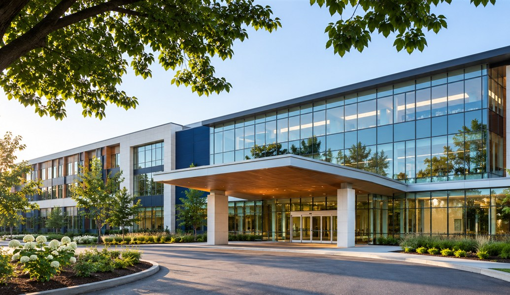
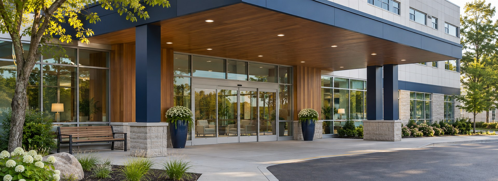

MEDICAL DEPARTMENTS
서해중앙병원 진료과
NEWS
병원 소식
환자 안전 캠페인
환자와 직원이 참여하는 안전·감염 예방 활동을 진행했습니다.
자세히 보기 →통합 간호 병동 운영 확대
간호·간병 통합서비스 병동 운영 범위를 넓혔습니다.
자세히 보기 →인플루엔자 국가 예방접종
국가 예방접종 대상과 일정을 확인해 주세요.
자세히 보기 →응급 진료 안내
응급 진료 이용 절차와 준비사항을 확인하세요.
자세히 보기 →복강경 수술 장비 안내
수술에 사용하는 다관절 기구 정보를 확인하세요.
자세히 보기 →영상 검사 장비 안내
자기공명영상 검사 장비 정보를 확인하세요.
자세히 보기 →